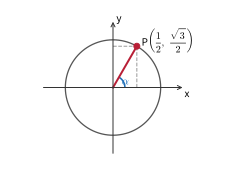
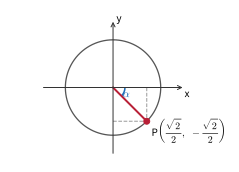
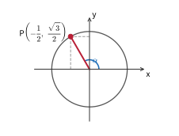

別冊練習問題 4 の解答 三角関数の合成
(1) \(0\leqq\theta<2\pi\) のとき、\(y=1\sin\theta+\sqrt{3}\cos\theta\) の最大値・最小値と、そのときの \(\theta\) の値を求めよ。
\(a\sin\theta+b\cos\theta\) の合成
\(a\sin\theta+b\cos\theta=r\sin(\theta+\alpha)\)、\(r=\sqrt{a^2+b^2}\)、\(\cos\alpha=\dfrac ar,\ \sin\alpha=\dfrac br\)。
\[r=\sqrt{(1)^2+(\sqrt{3})^2}=2\]角 \(\alpha\) を決める
\[\cos\alpha=\dfrac{1}{2},\quad \sin\alpha=\dfrac{\sqrt{3}}{2}\ \Rightarrow\ \alpha=\dfrac{\pi}{3}\]点 \((a,\ b)=(1,\ \sqrt{3})\) の向き（原点からの角）が \(\alpha\)。単位円上では次の点になる。

合成した式
\[y=1\sin\theta+\sqrt{3}\cos\theta=2\sin\left(\theta+\dfrac{\pi}{3}\right)\]最大値・最小値と \(\theta\)
\(-1\leqq\sin(\theta+\alpha)\leqq1\)、\(\theta+\alpha\) は \(\pi\) の周期を含む範囲を動くので、最大・最小をとる。
\[\text{最大値 }2\ \ (\theta=\dfrac{\pi}{6}),\qquad \text{最小値 }-2\ \ (\theta=\dfrac{7 \pi}{6})\]【答案】
\[\text{最大値 }2\ (\theta=\dfrac{\pi}{6}),\quad \text{最小値 }-2\ (\theta=\dfrac{7 \pi}{6})\]答
(2) \(0\leqq\theta<2\pi\) のとき、\(y=1\sin\theta-1\cos\theta\) の最大値・最小値と、そのときの \(\theta\) の値を求めよ。
\(a\sin\theta+b\cos\theta\) の合成
\(a\sin\theta+b\cos\theta=r\sin(\theta+\alpha)\)、\(r=\sqrt{a^2+b^2}\)、\(\cos\alpha=\dfrac ar,\ \sin\alpha=\dfrac br\)。
\[r=\sqrt{(1)^2+(-1)^2}=\sqrt{2}\]角 \(\alpha\) を決める
\[\cos\alpha=\dfrac{\sqrt{2}}{2},\quad \sin\alpha=- \dfrac{\sqrt{2}}{2}\ \Rightarrow\ \alpha=- \dfrac{\pi}{4}\]点 \((a,\ b)=(1,\ -1)\) の向き（原点からの角）が \(\alpha\)。単位円上では次の点になる。

合成した式
\[y=1\sin\theta-1\cos\theta=\sqrt{2}\sin\left(\theta- \dfrac{\pi}{4}\right)\]最大値・最小値と \(\theta\)
\(-1\leqq\sin(\theta+\alpha)\leqq1\)、\(\theta+\alpha\) は \(\pi\) の周期を含む範囲を動くので、最大・最小をとる。
\[\text{最大値 }\sqrt{2}\ \ (\theta=\dfrac{3 \pi}{4}),\qquad \text{最小値 }-\sqrt{2}\ \ (\theta=\dfrac{7 \pi}{4})\]【答案】
\[\text{最大値 }\sqrt{2}\ (\theta=\dfrac{3 \pi}{4}),\quad \text{最小値 }-\sqrt{2}\ (\theta=\dfrac{7 \pi}{4})\]答
(3) \(0\leqq\theta<2\pi\) のとき、\(y=-1\sin\theta+\sqrt{3}\cos\theta\) の最大値・最小値と、そのときの \(\theta\) の値を求めよ。
\(a\sin\theta+b\cos\theta\) の合成
\(a\sin\theta+b\cos\theta=r\sin(\theta+\alpha)\)、\(r=\sqrt{a^2+b^2}\)、\(\cos\alpha=\dfrac ar,\ \sin\alpha=\dfrac br\)。
\[r=\sqrt{(-1)^2+(\sqrt{3})^2}=2\]角 \(\alpha\) を決める
\[\cos\alpha=- \dfrac{1}{2},\quad \sin\alpha=\dfrac{\sqrt{3}}{2}\ \Rightarrow\ \alpha=\dfrac{2 \pi}{3}\]点 \((a,\ b)=(-1,\ \sqrt{3})\) の向き（原点からの角）が \(\alpha\)。単位円上では次の点になる。

合成した式
\[y=-1\sin\theta+\sqrt{3}\cos\theta=2\sin\left(\theta+\dfrac{2 \pi}{3}\right)\]最大値・最小値と \(\theta\)
\(-1\leqq\sin(\theta+\alpha)\leqq1\)、\(\theta+\alpha\) は \(\pi\) の周期を含む範囲を動くので、最大・最小をとる。
\[\text{最大値 }2\ \ (\theta=\dfrac{11 \pi}{6}),\qquad \text{最小値 }-2\ \ (\theta=\dfrac{5 \pi}{6})\]【答案】
\[\text{最大値 }2\ (\theta=\dfrac{11 \pi}{6}),\quad \text{最小値 }-2\ (\theta=\dfrac{5 \pi}{6})\]答